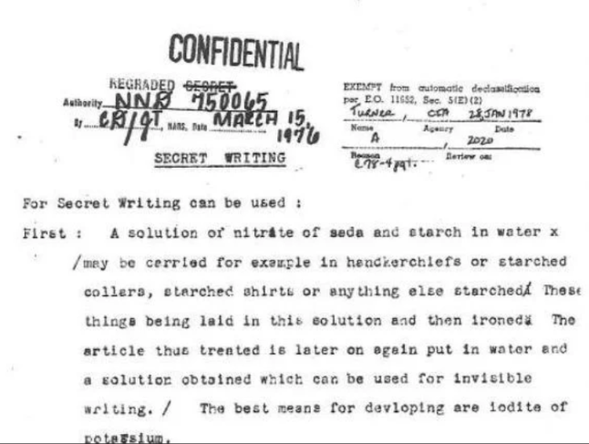

CLASSIFIED DATABASE / EST. 1978
THE LOST ARCHIVE.
Thousands of records. Hundreds of missing files. One unanswered question..

TLA / INTERNAL DATABASE
ARCHIVE OVERVIEW
Welocme to the recovered records database.
TOTAL RECORDS
UNRESOLVED CASES
RESTRICTED FILES
RECOVERED RECORDS
RECENT CASE FILES
CASE NO. 001
THE VANISHING SIGNAL
STATUS: UNRESOLVEDCASE NO. 002
THE EMPTY STATION
STATUS: UNDER REVIEWCASE NO. 003
PROJECT BLACKOUT
STATUS: CLASSIFIEDCASE INFORMATION
SELECT A CASE FILE
Select an investigation above to access its records.
VISUAL INVESTIGATION
RECOVERED EVIDENCE

EV-001 / ABANDONED STATION

EV-002 / FOREST LOCATION

EV-003 / UNKNOWN STRUCTURE
EV-004 / CCTV RECORDING

EV-005 / RECOVERED DOCUMENT
EV-006 / RADIO TRANSMISSION SITE
RESTRCITED ARCHIVE
RECOVERED DOCUMENTS
Original Investigation Report
1978 / INVESTIGATION RECORD
Missing Personnel Records
1989 / PERSONNEL DATABASE
Transmission Analysis
1991 / SIGNAL INVESTIGATION
DOCUMENT PREVIEW
SELECT A DOCUMENT
Select a recovered document to view its contents.
DATABASE QUERY
SEARCH ARCHIVE
SEARCH ALL RECOVERED RECORDS